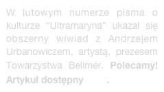
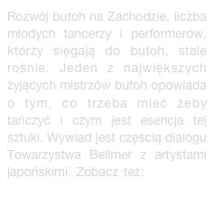

NAJNOWSZE WYDARZENIA / NEWS:


Pokaz filmu o Pracowni, “Piastowska 1”
Spotkanie o magii surrealizmu: Dlaczego Svankmajer

“Wokół Bellmera” spotkanie w T. Śląskim

Urodziny Hansa Bellmera w Katowicach

Psychodelic Culture
Wykłady Andrzeja Urbanowicza
Sztuka o życiu Bellmera - PREMIERA fotorelacja

FILM HALLOWEEN NA PIASTOWSKIEJ (najlepiej zobacz full screen ;) :
FILM FOLLOW THE WHITE RABBIT 2 - ROZKOSZ Happeningu !!!!


PREZENTACJA From Japan to Poland: Takayuki. The butoh dancer. - sztuka niezapośredniczonej ekspresji


© Copyright by Bellmer Society

HISTORIA
Pracowni Piastowska


Okultura
Studio Warszawa
Centralna
Ars Cameralis
Partnerzy Towarzystwa:


TAROT
Sztuka obrazu
107 Urodziny Hansa Bellmera w Katowicach
Zjazd Założycieli Buddyzmu w Polsce

HAPPENING - Króliki

Film z HALLOWEEN

Surrealizm Svankmajera
Piastowska w
Swiatowidzie

Psychodelia ‘60

Sylwester Bogów
(foto-relacja)
WYKŁADY
Andrzeja Urbanowicza

Albert Hofmann
i odkrycie LSD
ONEIRON
ezoteryczny krąg artystów


“Świat jest skandalem” - PREMIERA sztuki o Bellmerze w Teatrze Śląskim
Bill Karelis na Piastowskiej - Medytacja / Szambala
Spotkanie i wystawa: “Wokół Bellmera”
NOWOŚĆ !!!
KRÓLIKI NA ŚNIEŻCE

Wybrane aktywności:

FILM Film dokumentalny “PIASTOWSKA 1” reż. Maciej Muzyczuk, prod. TVP Kultura - już wkrótce na DVD.





Inspiracje Bellmerem nie ustają. Opowiadanie “Budowniczy lalki. Hans Bellmer / konfabulacja” Pawła Bitki Zapendowskiego jest fabularyzacją epizodu sprzed wojny, gdy w uzdrowiskowym Carlsruhe (dziś Pokój koło Opola) Bellmer tworzył swoją "Lalkę". E-book zawiera fotografie paryskich adresów Bellmera i link do nagrania z fragmentem prozy.


WYSTAWA WYDARZENIE: Yotsuya Simone i przyjaciele czyli Bellmer w Japonii


WYDARZENIE !!!


TANIEC “BAKTERIA ZWANA BUTOH: - DAISUKE YOSHIMOTO w Operze Narodowej. Z mistrzem Daisuke o tajemnicy tańca i sztuce transgresyjnej rozmawia Jan Przyłuski


FILM / WYSTAWA Video-relacja z wystawy “Simon Yotsuya i przyjaciele czyli Bellmer w Japonii”